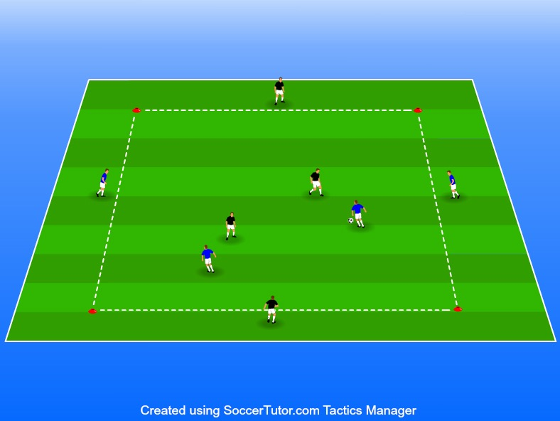

man mot man försvar, ett högt bolltempo samt rörelse och speluppfattning
1 boll per spel
4 koner per spel
4 spelare per lag
Använd jokrar vid ojämnt antal 1. 2v2 inne på spelytan.
Plan 20x20m
Bollhållande lag ska försöka hålla bollen inom laget.
Samtliga väggar är med bollhållande lag.
2 minuters matcher sen byter man rakt av väggarna mot spelarna i mitten.
Väggarna får bara använda 1 tillslag.
Viktigt att ledare trycker på att spelarna måste pressa tillsammans annars är det väldigt svårt att vinna tillbaka bollen.
Denna övning är jobbig nästan som fys om den görs rätt det betyder att det krävs fler korta pauser än vanligt för att hålla uppe nivån.